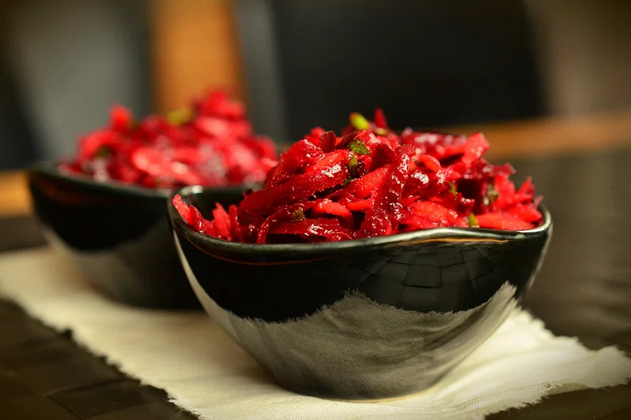

Dwight's Beet Salad
Bears, Beets, Battlestar Galactica

Description
Beets are a nutritional powerhouse and incredibly versatile in a variety of dishes. Especially the ones from Schrute Farms. This salad is easy to prepare and an excellent addition to any dinner party.
Ingredients
- 5 fresh "money" beets (2 pounds)
- 2 tablespoons olive oil
- 2 tablespoons rice vinegar
- 1/2 teaspoon salt
- 2 tablespoons chopped fresh mint
Steps
- Wash beets and trim tops.
- Place in saucepan, single layer, and cover with water. Bring to boil.
- Simmer for 40-60 minutes or until tender. Remove from water and cool.
- Peel beets and thinly slice. Toss with remaining ingredients.
- Cover and refrigerate at least 1 hour before serving.
Back to Directory